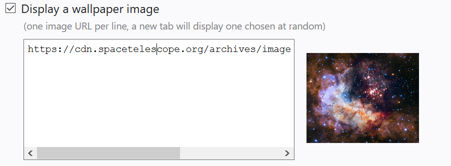

A new version of New Tab Tweaker has been installed.
- Allows preview of wallpapers as you edit their URL-list on the options page.
Experiencing an issue or got a suggestion? Let me know.
If you do not wish to be notified of new features proceeding an update in the future, head over to and unsubscribe.

Preview wallpapers as you edit (place the text cursor on the url you wish to preview).